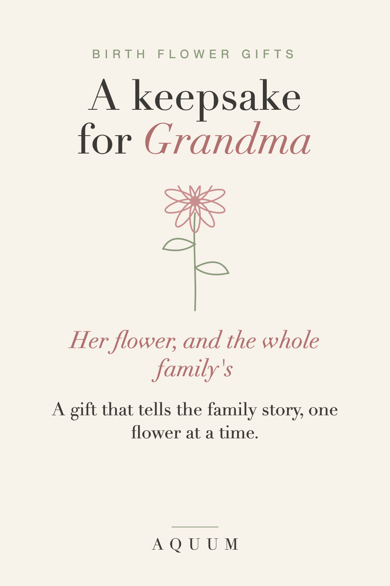

Birth Flower Gifts for Grandma: A Keepsake That Tells the Family Story
2026-09-30
This article may contain affiliate links. How that works.

Grandmothers are famously hard to shop for. Most of them say they have everything, and most of them mean it. What they rarely have is something that ties the family together, and that's exactly what birth flowers do best: every person gets a flower, and every flower has a meaning.
Start with her own flower
Find her birth month and read what her flower says. A few that suit grandmothers especially well:
- January · Carnation: love that doesn't give up. Carnations were the original Mother's Day flower.
- May · Lily of the Valley: the return of happiness, and a classic bridal bouquet flower.
- August · Gladiolus: strength of character, for the grandmother who held the family together.
- September · Aster: wisdom and patience, earned over a lifetime.
- October · Marigold: warmth that stays, and a flower of remembrance.
Every month has its own guide: see the complete month-by-month guide.
The family flower set
The gift grandmothers keep the longest is the one with everybody on it. Put her flower in the center and the grandchildren's birth flowers around it: a print, a mug, a tote or a shirt. It becomes a map of the family she can point to, one flower at a time.
A few tips:
- Write the list first. Names and birth months for everyone, so nobody is left out.
- Leave room to grow. If a new grandchild is on the way, choose something you can add to next year.
- Include a card with each meaning. She'll read them out loud to every visitor.
Gifts she'll actually use
- A mug with her flower for the morning coffee she's had at the same hour for forty years.
- A tote for the garden center or the library, with her flower and its meaning.
- A soft shirt for the weekend, in a size a little roomier than you think.
- Seeds or bulbs of her flower if she still gardens: a gift that blooms again every spring.
For Christmas or her birthday?
Both work. For her birthday, lead with her own flower. For Christmas, the family set is the stronger choice, because the whole family is in the room when she opens it. Made-to-order gifts take about a week to make and ship in the US, so order by mid-December for Christmas. Our Christmas gift guide has ideas for everyone else on the list.